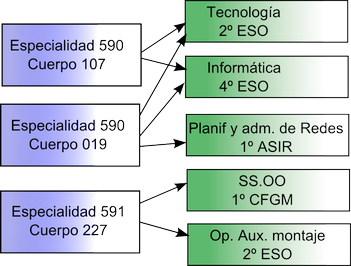

Tema 1:Introducción
En este tema introducimos de forma breve la estructura general de los exámenes de oposición, las variantes que podrían existir en el examen así como la estructura de las enseñanzas a modo de recordatorio
Temario de este módulo
Introducción
Planificación de Informática en ESO y PCPI
- Planificación en ESO
- Planificación en PCPI
Planificación de Tecnologías de la Información en Bachillerato
Planificación en Ciclos Formativos de Grado Medio
- Planificación de materias en 1º
- Planificación de materias en 2º
Sobre los tipos de profesor
Un estudiante oposita por un cierto cuerpo
- 590 Profesores de Secundaria
- 591 Profesores Técnicos de Formación Profesional
Cada cuerpo tiene distintas especialidades
- 590: Especialidad 019 Tecnología
- 590: Especialidad 107 Informática
- 591: Especialidad 227 Sistemas y aplicaciones informáticas
Cada especialidad tiene la atribución a distintas asignaturas.
- El cuerpo 590, especialidad 019 puede impartir “Tecnología” en 1º de ESO o “Tecnología industrial” en Bachillerato.
- El cuerpo 590, especialidad 107 “Bases de datos” en 1º de CFGS (Ciclos Formativos de Grado Superior), o “Informática” en 4º de ESO o “Tecnologías de la información” en Bachillerato.
- El cuerpo 591 suele impartir docencia exclusivamente en Ciclos Formativos y PCPI.
El acceso a la profesión (I)
A día de hoy se ha cancelado la aprobación del borrador del Reglamento de ingreso en los cuerpos docentes
Este reglamento establece que el acceso se hace por concurso-oposición (o mejor dicho “oposición-concurso”)
- A día de hoy, los temarios para Tecnología e Informática están renovándose
- Los temarios son solo una lista de temas. No hay apuntes, contenidos ni “libros oficiales” que estudiar
- Las listas de temas (temarios) se puede encontrar en las web del BOE y de sindicatos educativos
- Existen academias que preparan oposiciones y ofrecen los temas desarrollados y listos para estudiar
- También hay editoriales que desarrollan los temas y los venden al público.
Cabe destacar que el temario de Tecnología es muy diverso, y el de Informática es muy específico.
Aviso: por favor, recuerde que las normas evolucionan contínuamente y que aquí solo se comenta el borrador en el que se ha trabajado. De hecho, hay unos borradores con los nuevos temarios, pero a día de hoy, aún no se han aprobado.
El acceso a la profesión (II)
- En torno al mes de Abril, la Junta publica en su DOCM la convocatoria de oposiciones.
- En dicha convocatoria se indican las reglas.
- En dicha convocatoria también está la solicitud que se debe rellenar, la cantidad a pagar como tasas, los plazos y otras informaciones de valor.
- Una vez entregada la instancia junto con las tasas hay que esperar la publicación de las listas de admitidos. Si no se aparece en ellas suele haber un plazo para reclamar.
- Si finalmente se es admitido en el proceso hay que permanecer atentos a las sedes de los tribunales. En años anteriores Tecnología tenía tribunales en todas las provincias, pero Informática no. Es importante reservar hotel tan pronto como se publiquen dichas localidades
El acceso a la profesión (III)
El día del examen es importante acudir con el DNI sin caducar y encontrar el instituto donde se realizarán las pruebas. Se aconseja encarecidamente localizar estas instalaciones con antelación.
El examen (Reglamento LOE) consta de dos pruebas
- La primera prueba tiene dos partes (el orden puede variar)
. La parte A) consiste en ejercicios prácticos
. La B) es un desarrollo de un tema de entre cuatro escogidos al azar.
En principio este el sistema que se usará, a no ser que la nueva legislatura traiga cambios
Hay un borrador con una estructura nueva que comentaremos a continuación
El examen LOE
- Cada prueba se valora de 0 a 10 y hay que aprobar las dos. Después se hará la media
- En la prueba 1 se deben asignar al menos 3 puntos a cada parte. Es decir, quizá CLM decida dar un 30% a la parte A) y un 70% a la parte B pero Madrid decida dar 35% y 65%. No se permite a ninguna administración dar pesos del 20% o del 80%
- Además se debe sacar al menos un 25% de la valoración que se le dé a cada parte
- La fase de oposición vale un 66% de la nota y la de concurso (idiomas, másteres, cursos, experiencia...) vale un 33%
Un ejemplo de cálculo
Suponiendo que una administración decide dar un 40% a la parte A) y un 60% a la parte B
¿Qué ocurre con estos aspirantes?
| Aspirante |
Nota parte 1 |
Nota parte 2 |
|---|
| A1 |
2 |
6 |
| A2 |
8 |
3.25 |
| A3 |
3 |
7 |
| A4 |
2.5 |
6 |
Por ejemplo, el A1 tiene 2*0,4 + 6*0.8 = 0.8 + 4.8. La administración decidió que la primera parte contaba hasta 4 puntos así que el 25% de 4 puntos arroja que había que sacar un mínimo de 1 punto, por lo que suspende
Borrador: La primera parte
Sobre la parte A (teórica)
- Se supone que habrá 10 o 15 preguntas pero no se especifica cuanto tiempo habrá para ellas.
- Las preguntas pueden tratar de cualquier cosa relacionada con cualquier aspecto del temario.
- El RD indica que serán preguntas “cortas” pero no especifica su longitud
- Tradicionalmente ha durado dos horas.
- Sobre la parte B (práctica)
- Es probablemente la parte más difícil de la oposición
- Consta de 3/4 ejercicios prácticos relacionados con el temario, aunque es casi imposible imaginar qué clase de problemas pueden entrar.
Cada parte se califica de 0 a 5 y se debe sacar al menos un 2‘5 para poder sumar ambas notas
Si en total, las notas suman 5 o más se podrá pasar a la segunda parte: la “encerrona”.
Borrador: la segunda parte
- El opositor podrá elegir uno de entre tres temas
- Una vez elegido se encierra al opositor en un aula con todo el material que desee llevarse y que deberá traer él.
- El aspirante deberá exponer oralmente su desarrollo y explicaciones sobre ese tema.
- Se puede usar un guión o presentación informática que deberá entregarse al terminar.
- El RD indica que “Se valorará especialmente la incorporación de las TICs a la práctica docente.”
- Se debe sacar al menos un 5 para superar la oposición
- Aviso: la originalidad en esta parte suele valorarse, Moodle y otros suelen ser tecnologías comentadas por casi todos los opositores*
Borrador: el concurso
- Si se saca un 5 de media entre las dos partes se pasa a la fase de concurso.
- En ella se valoran los cursos, idiomas, u otros méritos.
- El concurso produce otra nota que como máximo valdrá 3 puntos (30% de la nota final del concurso oposición)
- El otro 70% sale de la nota de oposición.
- Con todas estas notas, se ordena a los aspirantes.
- Los primeros (si hay 22 plazas, los 22 primeros, p.ej) pasan la oposición.
- Aviso: es importantísimo que se revise la puntuación que la Administración otorga ya que si no se reclama un error, se pierde puntuación en esta fase, lo que puede ser fatal.*
En líneas generales
- En el borrador o en el sistema LOE se accede al sistema de interinos con la nota de oposición
- A fecha de hoy, esto significaría que se eliminan ciertos privilegios que permitían que los aspirantes más antiguos permanecieran por delante incluso pese a tener menos nota.
- No hay nada decidido, pues los sindicatos presionan para crear un sistema parecido al anterior donde se daba más peso a la antigüedad.
- Es importante permanecer atento durante todo el proceso, para lo cual se aconseja afiliarse a un sindicato o consultar sus webs diariamente.
- La ordenación de las listas de interinos es un tema que aún se está estudiando.
Fase de prácticas
- En ella se da clase durante unas 8-13 horas semanales y el resto de horas se dedican a tareas del Plan de Prácticas del Centro.
- Se debe hacer una memoria de alguno de los cursos y defenderla ante un tribunal.
- Si se suspende solo hay otra oportunidad de aprobarla footnote:[Es muy poco frecuente el suspender las prácticas.]
- Se debe tener un tutor de prácticas, normalmente un profesor de la misma especialidad y departamento. Se puede autorizar a un tutor de una especialidad afín.
Resumen
- Un profesor aprueba una oposición por una cierta especialidad
- Las leyes establecen que la educación se divide en cursos y materias
- La conexión entre materias y especialidades del profesorado que pueden impartirla viene dada por las atribuciones
Diagrama de atribuciones
Puede haber varias especialidades que tengan especialidad sobre una misma materia. También puede ocurrir que solo una especialidad pueda impartir una cierta materia.
Las atribuciones se regulan por reales decretos qué indican que especialidad o especialidades pueden impartir qué asignaturas

Los IES
En los institutos es frecuente encontrar una jerarquía como esta. Los centros con jefes adjuntos (que “descargan” de trabajo) al jefe de estudios son minoría.
- El director es el representante de la administración en el centro.
- El jefe de estudios trata los temas relativos a la disciplina de los alumnos
- El secretario nos ayudará con los asuntos económicos.
- El jefe de departamento coordina las materias de la especialidad y nos representan en la Comisión de Coordinación Pedagógica (CCP), que es el organo que reúne al equipo directivo y a los jefes de departamento.
El sistema educativo
Las etapas educativas son las siguientes
- Aviso: aunque la ley dice que solo se puede pasar a PCPI con 15 años en “situaciones excepcionales”, es muy frecuente que se abuse de esta “excepcionalidad”*
Tema 2:Programación en ESO/PCPI
Introducción
- Se denomina currículo al conjunto de contenidos que se deben impartir en una etapa educativa. Estos contenidos se estructuran y ordenan secuencialmente con el fin de proporcionar una coherencia global (en realidad hay tantas definiciones como autores y pedagogos).
- Por otro lado se define la Didáctica como “la ciencia que estudia los métodos de enseñanza”.
- Los métodos que utilice cada profesor suelen plasmarse en su forma de planificar un curso. Aunque aquí no se estudien los métodos didácticos cabe destacar que los métodos evolucionan con el tiempo y los docentes también lo hacen a lo largo de su vida profesional y dicha evolución no siempre transcurre de forma paralela.
- A pesar de que todo cambie la planificación de un curso es una tarea que cambia poco, por lo que lo que se explique en este curso puede ser útil por mucho tiempo.
El currículo en España
- El primer modelo se estableció con la Ley General de Educación de 1970
- La Ley de Ordenación General del Sistema Educativo (LOGSE) propuso un modelo radicalmente nuevo en 1990.
- La Ley Orgánica de Calidad de la Educación (LOCE) modificó algunos elementos básicos de la LOGSE en el 2002.
- La Ley Orgánica de Educación (LOE) del 2006 modificó y suprimió algunos parámetros de la LOCE.
- En la actualidad la OCDE y la UE proponen un modelo basado en las competencias básicas
La LOGSE
Introdujo muchos elementos nuevos en el día a día de la enseñanza e incluso algunos de ellos permanecen hoy en día
- Comprensividad
- Atención a la diversidad: AC y Diversificación.
- Distinto modelo de evaluación: Inicial, formativa y sumativa.
- Promoción automática
- Niveles de concreción curricular: Diseño Curricular de Base, Proyecto Curricular de Centro y Programación de aula
La LOCE
Modificó la LOGSE de la forma siguiente:
- Sustituye la comprensividad por itinerarios
- El DCB deja mucho menos margen a las Comunidades Autónomas
- Reforma la selectividad y crea la PAU (Prueba de Acceso a la Universidad)
- Introduce las evaluaciones externas
La LOE
La LOE define el currículo como <<conjunto de objetivos, competencias básicas, contenidos, métodos pedagógicos y criterios de las enseñanzas reguladas por la ley>> .Para la ESO, la LOE estipula que:
- Los centros deben tener en cuenta la atención a la diversidad
- Se deben adquirir las competencias básicas teniendo en cuenta especialmente las orales y las matemáticas
- Las administraciones tienen el deber de proporcionar soluciones específicas a los alumnos con dificultades de aprendizaje
- Al terminar 2º de ESO se debe realizar una evaluación de diagnóstico.
La LOE (II)
El profesorado, al hacer su programación debe tener en cuenta las siguientes situaciones
- Alumnos con Necesidades Educativas Especiales (ACNEE’s)
- Dificultades específicas de aprendizaje (dislexias, dificultades motoras)
- Altas capacidades intelectuales
- Incorporaciones tardías al sistema
- Condiciones personales del alumno
Los documentos de un centro
- El Proyecto Educativo de Centro (PEC): es un proyecto a largo plazo
- El Proyecto de Gestión del Centro (PGC): centrado en la gestión económica
- Normas de Organización y Funcionamiento (NOF): regula la disciplina del alumnado en general, pero también la del profesorado
- Programación General Anual: concreta los tres anteriores y especifica como se implantará y desarrollará durante el curso escolar.
Elementos de una programación
En líneas generales, toda programación debe contener estos elementos.
- Referentes: Leyes orgánicas, PCC, Reales Decretos de Enseñanzas mínimas.
- Elementos básicos: objetivos, competencias, secuenciación y criterios de evaluación.
- Elementos metodológicos y organizativos: agrupamientos, espacios, medidas de atención a la diversidad...
- Actividades de enseñanza-aprendizaje
- Mecanismos de evaluación: criterios y procedimientos de evaluación.
- Mecanismos de autoevaluación: mecanismos para autoevaluarnos de acuerdo con el plan de evaluación del centro
- Aviso: no siempre hay un plan de evaluación del centro, aunque cada vez hay más centros que integran un plan de calidad. Si no hay nada de esto,puede hacerse como se desee.*
Estructura de una programación
En general, cada IES tiene su propio modelo de programación didáctica, aunque siempre nos encontraremos los siguientes apartados
- Introducción
- Contextualización
- Objetivos/competencias/contenidos
- Metodología
- Actividades/Unidades didácticas
- Evaluación del alumno
- Evaluación del profesor
La introducción
- Suele situar la materia dentro de la etapa
- A veces cita los antecedentes en la docencia de la misma materia en cursos anteriores.
- Suele tener un formato libre
La contextualización
Aquí solemos introducir los referentes legales,Una programación debe estar relacionada con
La LOE como norma estatal (BOE 4-5-2006)
El RD 1631/2006 de Enseñanzas mínimas de Secundaria para el Estado
Características del centro y del grupo
- Ubicación
- Características del centro
- Sociología del alumnado y sus familias
- Organización del aula
- Proyectos en desarrollo
Consejo: a la hora de determinar las características del centro y del grupo puede acudir al PEC.
Los objetivos y/o competencias
- Indicaremos como nuestra materia contribuye a desarrollar:
- Las competencias básicas.
- Los objetivos generales del área para la etapa.
- Los objetivos del área para el curso.
- Indicaremos la secuencia de contenidos
- Tenga presente que puede modificar libremente el orden de los contenidos, aunque en Tecnología es un poco menos habitual.
- Consejo: la creación de programaciones por competencias es una tarea compleja que desarrollaremos mas adelante en un ejemplo.*
Los objetivos y/o competencias (II)
La Programación Didáctica, tras enumerar el contenido y la composición de las ocho competencias básicas formuladas por los Decretos de Enseñanzas Mínimas (nueve en el caso de Castilla la Mancha con la inclusión de la Competencia Emocional) tiene que hacer visible la medida en la que el área o materia objeto de ésta contribuye a desarrollar en el alumno las Competencias Básicas
Esto complica la labor diaria del docente, ya que se espera que ahora su labor en la enseñanza de por ejemplo CC.NN contribuya también, por ejemplo, a competencias como la lectura o las matemáticas.
Los objetivos. Son más concretos que las competencias.
- Por un lado el profesor debe indicar qué objetivos generales de etapa se desarrollan (afectivo, intelectual...)
- Por el otro se deben indicar objetivos específicos de la materia.
Las actividades
- Es uno de los puntos más difíciles ya que con frecuencia se programa sin conocer al alumnado.
- Normalmente se parte de un conjunto de actividades de nivel medio, aunque con frecuencia dicho conjunto se altera durante el curso
- Se espera que se incluyan tanto actividades de refuerzo como de profundización (no en vano la legislación actual contempla el caso de alumnos superdotados)
- Aquí también se suelen incluir los recursos didácticos: proyectores, pizarras, kits de electrónica, etc...
Evaluación del alumno
Debe incluir tres elementos fundamentales:
- Criterios de evaluación: ¿Qué vamos a comprobar que al alumno sabe hacer? ¿qué peso le vamos a dar?
- Criterios de calificación: ¿como se construye la nota final del alumno?
- Procedimientos de evaluación: ¿usaremos exámenes escritos? ¿orales? ¿demostraciones?
Evaluación del profesor
No tiene nada que ver con mecanismos externos de evaluación footnote:[Para eso ya está la evaluación externa por parte de la Inspección], sino de indicadores que ofrecemos al lector
- Demostramos haber relacionado nuestra programación con el PEC, demostramos contribuir a las competencias básicas.
- Razonamos los motivos de nuestra secuenciación o relacionamos nuestra materia con objetivos de otros programas (Secciones Europeas, Planes de Lectura, ...)
- Justificamos el uso de nuestra metodología
Aviso: al elaborar la programación debe ponerse empeño y cuidado.
Su programación se la leerá más gente de la que Vd. cree.
Referentes autonómicos (En la contextualización)
Toda esta normativa puede encontrarse en los enlaces sobre http://www.educa.jccm.es/educa-jccm/cm/educa_jccm/tkContent?idContent=13722&locale=es_ES&textOnly=false[ESO] y http://www.educa.jccm.es/educa-jccm/cm/educa_jccm/tkContent?idContent=40444&locale=es_ES&textOnly=false[Bachillerato]
- El Decreto 69/2007 que regula el currículo de la ESO para CLM.
- Orden de 4-6-2007 que regula la evaluación en la ESO.
- El Decreto 65/2008 que regula el currículo de Bachillerato en CLM.
- Orden de 9-8-2008 que regula la evaluación en Bachillerato.
- Orden de 4-6-2007 que regula la diversificación.
Referentes locales (En la contextualización)
En pocas palabras una programación didáctica debe tomar como referente local los siguientes documentos (¿Qué significaban estas siglas y qué documentos representaban?)
Se debe destacar no obstante que en algunos centros no se solicita una referencia especial a dichos documentos* Otras referencias que se deben tomar son:
- Características del alumnado a nivel individual y de grupo
- Características del profesorado.
Secuenciación (Al hacer los objetivos)
- En este punto se deben tomar los contenidos de los Reales Decretos y organizarlos en _Unidades Didácticas_* Se permite que el profesor reordene los temas y los contenidos en la forma que considere conveniente.
- Lo cierto es que prácticamente el 100% de las veces se recurre a libros que proporcionan secuenciaciones ya hechas y con una cierta coherencia
- En los Ciclos Formativos, como por ejemplo los de Informática, ocurre a menudo que se introducen conceptos nuevos* Sin embargo, con la ley en la mano no se pueden desechar los que hubiera en la ley.
Criterios de evaluación (Al hacer la evaluación del alumno)
- Se utilizan para determinar el nivel alcanzado por el alumno el desarrollo de los objetivos y se extraen de la legislación.
- Un ejemplo real para la materia “Planificación y administración de redes”
- Se han identificado los factores que impulsan la continua expansión y evolución de las redes de datos.
- Se han diferenciado los distintos medios de transmisión utilizados en las redes.
- Se han reconocido los distintos tipos de red y sus topologías.
- Se han descrito las arquitecturas de red y los niveles que las componen.
- ¿Que porcentaje corresponde a cada uno de tales criterios? Queda a criterio del docente.
Criterios de evaluación II (Al hacer la evaluación del alumno)
Se debe recordar que los elementos de la programación deben contextualizarse al contexto del centro* Tomando el ejemplo anterior de Ciclos Formativos contextualicemos dichos criterios.
- Se han identificado los factores que impulsan la continua expansión y evolución de las redes de datos.
- Se han diferenciado los distintos medios de transmisión utilizados en las redes.
- Se han reconocido los distintos tipos de red y sus topologías.
- Se han descrito las arquitecturas de red y los niveles que las componen.
Criterios de evaluación III (Al hacer la evaluación del alumno)
Por otra parte para la ESO/Bachillerato se contextualizan más otros elementos, ya que los criterios dejan menos margen para la adaptación. Algunos elementos a adaptar son:
- Los valores especificados en el PEC
- Programas educativos como el Plan de Lectura o Bilingüismo.
- Otros programas como PROA o Plan de Abandono
Debe recordarse que todo esto se hace para conseguir hacer una formación lo más personalizada al entorno del alumno. ¿Recuerda los tres niveles de concreción curricular?
Una programación de ESO (I: Introducción)
En la introducción podemos indicar hechos como los siguientes
- El creciente uso de las TIC (Tecnologías de la Información y la Comunicación)
- La necesidad cada vez mayor de adquirir unas capacidades básicas en su uso.
- La utilidad que, como herramienta, ofrecen las TIC para el desarrollo de otras capacidades.
Debemos recordar, que en general, la introducción suele tener un formato libre.
Una programación de ESO (II:Contextualización)
Situaremos la materia de Informática en el contexto de 4º de ESO.
En cumplimiento de la LOE, diseñaremos actuaciones para dos supuestos alumnos:
- Un alumno con superdotación
- Un alumno con dificultades auditivas severas.
Sobre el contexto del centro:
- Ubicación.
- Clase social media: todos los alumnos tienen PC pero no todos tienen conexión a Interne
- Aula con 16 equipos, dos alumnos por PC
- Proyecto de periódico on-line.
Una programación de ESO (III:Objetivos)
Extraído de RD 69/2007 de currículo en la ESO
“Utilizar y mejorar el funcionamiento de un ordenador aislado o en red..., buscar y seleccionar recursos...”
En relación con las competencias (cortado y pegado)
Esta materia contribuye al desarrollo de todas las competencias básicas pero se
identifica especialmente con la competencia “tratamiento de la información y competencia digital”
Una programación de ESO (III bis:Contenidos)
En este ejemplo impartiremos las unidades didácticas siguientes
- Fundamentos de hardware
- Sistemas operativos
- Redes y seguridad
- Imagen digital
- Hipertexto y multimedia
- Presentaciones
- Redes sociales
- Software libre
- Introducción a la programación
Una programación de ESO (IV:Metodología)
Podemos elegir varias posibilidades
Si del análisis del contexto hemos deducido que tal vez en el grupo hay muchos alumnos que prefieren la autonomía, tal vez podamos elegir una metodología en la que el alumno trabaje por sí sólo a partir de tareas que deba completar.
- Dentro de ella se puede optar por tareas “cerradas” donde el alumno debe seguir los pasos primero y explorar después.
- O elegir tareas “abiertas” que permitan explorar el entorno, programa o herramienta para despues hacer un ejercicio.
Si los alumnos aún no han alcanzado una cierta madurez quizá convenga más elegir una metodología más basada en seguir las instrucciones del profesor.
En ocasiones también puede funcionar la metodología basada en el “alumno-tutor” donde los más adelantados ayuden a los más rezagados.
¿Puede señalar ventajas o inconvenientes de cada una?
Una programación de ESO (V:Actividades y U.D)
- Las actividades se enmarcan en Unidades Didácticas.
- Las U.D son propuestas de trabajo en el aula donde se indica un pequeño conjunto de objetivos, competencias, métodología, tareas a realizar
- Normalmente, los libros y las guías del profesor suelen proporcionar actividades bastante buenas* Sin embargo, también suele ser necesario crear actividades propias o extraídas de distintos sitios.
Una programación de ESO (V:Actividades y U.D)
En una U.D debemos incluir al menos, los siguientes elementos:
Título, etapa, curso, materia.
Temporalización.
Justificación.
Relación con otras unidades.
Objetivos y competencias(normalmente un subconjunto de la programación).
Contenidos
- Contenidos procedimentales
- Contenidos conceptuales
- Contenidos actitudinales
Metodología
Recursos necesarios (proyector, ordenadores...)
Tareas a realizar
Criterios de evaluación
Una programación de ESO (VI:Evaluación del alumno)
Los criterios de evaluación son lo que queremos comprobar en los alumnos* Son cosas que deben conocer o saber hacer
Los criterios de calificación explican como se construye la nota, p.ej:
- La nota del tema 1 comprobar los criterios a), b) y c)* En el examen se pondrá un 40% de preguntas/problemas del a), un 30% del b) y un 30% del c
- Se descontará 0,1 por cada falta.
- La nota del trimestre será un 75% de los exámenes, un 15% de trabajos o prácticas un 5% del cuaderno y un 5% de actitud.
Aviso:Los criterios de evaluación y calificación son el principal elemento que alumnos/padres intentan invalidar para conseguir aprobar. Por favor revise bien que sus criterios son los establecidos legalmente y que los porcentajes que ha elegido
tienen cierto sentido
Una programación de ESO (VII: Evaluación del profesor)
Hay diversas alternativas
Consejo: la Consejería de Educación convoca anualmente evaluaciones externas de carácter voluntario. Suelen servir para acceder al puesto de director y para solicitar “años sabáticos” (aunque esto último parece haber desaparecido). Consulte el DOCM de 25-12-2008 sobre ámbitos, dimensiones e indicadores
Los PCPI
Los Programas de Cualificación Profesional Inicial
”...tienen como finalidad [...] favorecer que ningún alumno o alumna abandone el sistema educativo sin haber agotado todas sus posibilidades de formación y titulación.”
- Están dirigidos a alumnos que por el motivo que sea se prevea que no vayan a terminar la ESO.
- Incorporan materias relacionadas con la FP.
- Su alumnado se caracteriza por tener un nivel muy bajo en gran parte de las competencias básicas
Objetivos en los PCPI
En un máximo de dos cursos los PCPI ayudarán a los alumnos a:
- Obtener competencias personales.
- Obtener competencias profesionales.
- Proporcionar una formación práctica.
- Facilitar el desarrollo de competencias de la ESO.
- Prestar apoyo tutorial.
- Facilitar experiencias positivas.
- Obtener capacidad de aprender a aprender.
- Conectar el sistema educativo y el productivo.
Tipos de PCPI
Los PCPI son programas que no tienen por qué impartirse en los IES.
- Aulas profesionales.
- Taller profesional.
- Programas de dos años.
- Programas de inclusión laboral.
Cuestiones a conocer
En los PCPI hay módulos obligatorios (los relacionados con FP) y voluntarios (relacionados con la ESO)
Los PCPI tienen Formación en Centros de Trabajo (FCT) llamados vulgarmente “prácticas en empresas”* Las prácticas tienen su propia programación.
Los módulos (materias) que se ofertan son
Los que desarrollen las competencias básicas:lingüística, matemática...
Los que desarrollen autonomía personal.
Dos módulos “de libre configuración”
- Español
- Ed. Física
- Convivencia
- Módulo propuesto por el centro
Programación de módulos voluntarios
Son los que conducen a la obtención del título de ESO.
- Ámbito de comunicación
- Ámbito social
- Ámbito científico-tecnológico
Todos ellos se rigen por la normativa para personas adultas en sus objetivos, contenidos, criterios,etc...
Recordemos la estructura básica de una programación
Recordando
En toda programación debemos desarrollar estos elementos:
- Introducción
- Contextualización
- Objetivos/competencias/contenidos
- Metodología
- Actividades/Unidades didácticas
- Evaluación del alumno
- Evaluación del profesor
Veamos una programación de un módulo voluntario: el científico-tecnológico
Introducción
- Recordemos que suele tener un formato libre
- Explicaremos que integra contenidos de diversos módulos
- Comentaremos si trabajamos en el nivel I o en el nivel II de las enseñanzas.
Contextualización
El alumnado suele traer un historial malo
- A nivel académico
- Y a veces a nivel de comportamiento
Analizar la sociología del entorno.
Situar nuestro módulo, si procede, en algún proyecto de innovación.
Recordar que el módulo es una mezcla de
- Tecnología
- Ciencias Naturales
- Matemáticas
- Un poco de Plástica y Música
Objetivos y competencias
- Comprender mensajes con contenido científico
- Expresión científico-matemática
- Resolver problemas.
- Adquirir conocimientos sobre medio natural.
- etc...
Contenidos
Números enteros, operaciones y divisibilidad* El conocimiento científico y su método.
- Números naturales
- Negativos
- Letras como incógnitas
Números racionales, potencias y raíz cuadrada* La Tierra en el Universo.
- Significado de las fracciones
- Potencias
- El Universo y el sistema solar
Proporcionalidad numérica, tablas de valores y gráficas* Composición de la Tierra* Iniciación a las TIC.
- Proporcionalidad directa e inversa
- La atmósfera
- Hardware y SS.OO
Metodología
En esta etapa se proporcionan orientaciones metodológicas.
- Se pide romper con la dependencia y potenciar la autonomía.
- Potenciar la motivación asociando experiencias pasadas con nuevos aprendizajes.
- Refuerzo de sentimientos positivos.
En general la enseñanza en grupos suele considerarse una tarea bastante complicada.
Actividades (recordatorio)
La estructura de las U.D suele ser la misma en las distintas etapas
Título, etapa, curso, materia.
Temporalización.
Justificación.
Relación con otras unidades.
Objetivos y competencias(normalmente un subconjunto de la programación).
Contenidos
- Contenidos procedimentales
- Contenidos conceptuales
- Contenidos actitudinales
Metodología
Recursos necesarios (proyector, ordenadores...)
Tareas a realizar
Criterios de evaluación
Evaluación del alumno
- Identificar elementos matemáticos presentes en la realidad, y aplicar los conocimientos matemáticos adquiridos en situaciones cotidianas.
- Utilizar los números enteros, fracciones decimales y porcentajes sencillos, sus operaciones y propiedades para recoger, transformar e intercambiar información y resolver problemas relacionados con la vida diaria.
- Respetar la jerarquía de las operaciones y la correcta aplicación de los signos en las diversas situaciones y operaciones.
- Identificar y describir regularidades, pautas y relaciones en conjuntos de números, utilizar letras para simbolizar distintas cantidades y obtener el valor numérico de fórmulas sencillas.
- Organizar e interpretar informaciones diversas mediante tablas y gráficas, e identificar relaciones de dependencia en situaciones cotidianas.
y así hasta 20 criterios que se deben utilizar* ¿Qué le parece?
Evaluación del alumno (II)
Los cursos 1º y 2º de PCPI no se evalúan de la misma forma
- Los ámbitos no se organizan de la misma forma en 1º que en 2º
- En algunos ámbitos las notas se componen a partir de dos notas*
- Puede que haya dos profesores para dos “trozos” del mismo ámbito y puede que no.
- Los alumnos pueden suspender “Libre configuración” y “Autonomía personal” e ir a la FCT.
Aviso: para profesores de Tecnología: los alumnos necesitan aprobar este ámbito si desean obtener la ESO.
Evaluación del profesor
De nuevo podemos acudir a los proyectos de calidad o al establecimiento personal de medidas que permitan auto-evaluarnos.
- Temario cumplido
- Porcentaje de aprobados
- etc...
Resumiendo
- Los elementos de una programación se extraen en su mayor parte de la legislación correspondiente* Consulte los Reales Decretos de la materia que programa
- Los departamentos suelen tener su propio modelo de programación “rellenable”.
- Compruebe los criterios de evaluación y calificación.
- La programación en PCPI es más compleja. El desarrollo de los cursos también.
- En caso de duda, puede consultarse al equipo directivo.